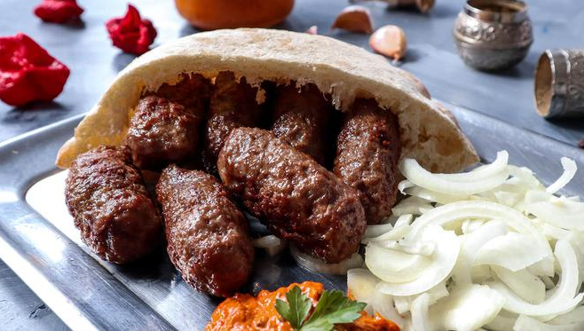

Home

Cevapi is the traditional bosnian meal and all Balkan countries loves them. This recipes is with beef and veal, which I know is not traditional, but it was so delicious!
Ingredients
- ½ pound lean ground beef
- ½ pound ground veal
- ½ cup dry bread crumbs
- 1 small onion, finely chopped
- 1 egg
- 2 tablespoons soda water
- 1 tablespoon seasoning blend (such as Vegeta®)
- 2 cloves garlic, minced
- 1 teaspoon baking soda
- 1 teaspoon paprika
- 1 pinch red pepper flakes
- salt and ground black pepper to taste
Steps
- Line a baking sheet with parchment paper.
- Combine beef, veal, bread crumbs, onion, egg, soda water, seasoning blend, garlic, baking soda, paprika, red pepper flakes, salt, and pepper in a large bowl. Mix well. Shape into small sausages and place on the prepared baking sheet
- Preheat an outdoor grill for high heat and lightly oil the grate. Grill sausages until browned, about 5 minutes per side.
Return to top